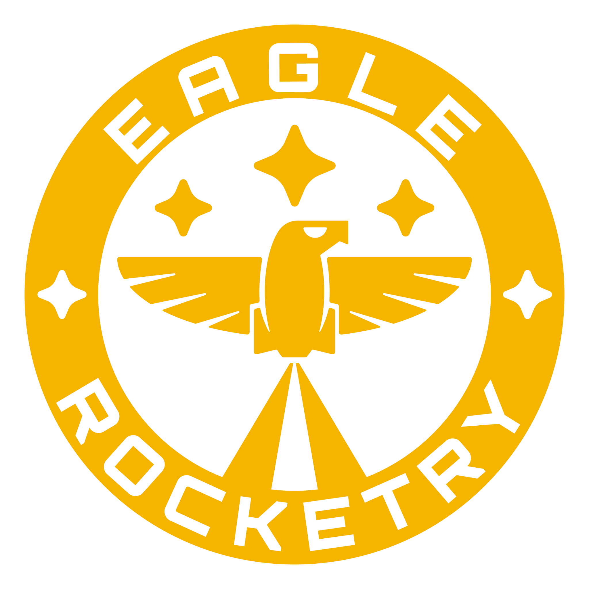
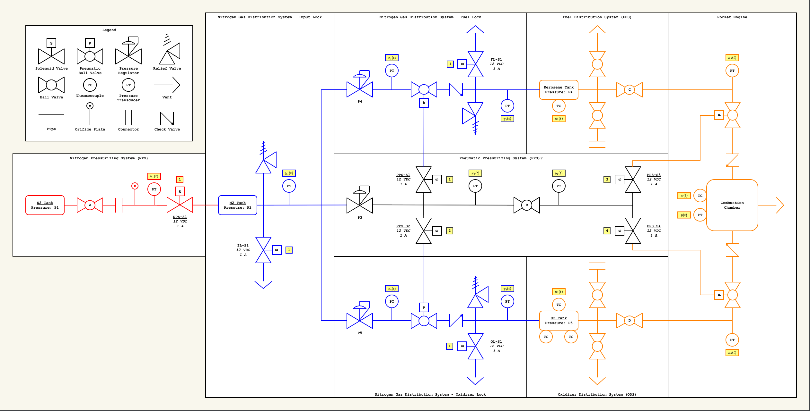

Cal State LA Student Rocketry
Engineering
the next flight.
Eagle Rocketry brings students together to design, build, test, and document aerospace systems—turning classroom fundamentals into flight hardware.

01 / Design
02 / Build
03 / Test
01 One student program
Built through
iteration.
Design decisions become hardware. Hardware becomes test data. Each cycle returns to the system with a clearer question.
01 Mission systems
Built as one vehicle.
Engineering resources for understanding how the vehicle, feed system, components, and launch procedures fit together.
01
02
03
04
05
Available now
System Architecture
Explore the liquid feed system and the Spring 2026 working bill of materials.
Available · WIP noted
Flight Operations
Follow pressure conditions, relay actions, system unlock, and ignition. The ladder logic remains a work in progress.
Available now
Solid Rocket & TVC
Explore onboard systems and the two-servo motor-control architecture.
Project archive
Program Timeline
Follow selected propulsion, controls, structures, and current feed-system work.
Student resources
Engineering Toolkit
Open university facilities, competition information, and technical project files.
System architecture Liquid feed
Trace the system.
The current diagram maps nitrogen pressurization, fuel and oxidizer distribution, pneumatic controls, instrumentation, and the rocket engine.
Working file: coefficient fitting and the component list are still in progress.

Open full resolution ↗02 Project history
Each year builds the next.
Selected projects documented by Cal State LA’s engineering capstone program.
Propulsion
Hybrid Rocket Propulsion Unit
Students designed and manufactured a nitrous-oxide and paraffin-wax hybrid propulsion system for a 10,000-foot competition objective.
University archive ↗Guidance & control
Active Stabilization & Altitude Control
A multidisciplinary project explored active control for disturbance rejection and altitude targeting during a Spaceport America Cup campaign.
University archive ↗Structures
Filament-Wound Composite Structures
The team investigated carbon-fiber fuselage and fin construction using filament winding, structural analysis, and aerodynamic analysis.
University archive ↗Current work
Feed System Development
The current working set includes the liquid-feed architecture and a developing component bill of materials.
Explore the system ↗03 Engineering toolkit
Resources for the work.
01
ECST MakerspaceMachining, composites, CAD, fabrication, and prototyping resources.
↗
02Student Competition ProjectsCal State LA’s directory of engineering competition teams.
↗
03Liquid SystemsFeed architecture, pressure control, relay actions, and working documentation.
→
04Solid Rocket & TVCOnboard systems and the two-servo motor-control architecture.
→
05Spring 2026 Working BOMView the in-progress component workbook on SharePoint.
↗
06Project Vulcan DAQThe team’s public 2025 modular data-acquisition hardware repository.
↗
07Eagle Rocketry CAD LibraryShared KiCad symbols and component footprints used across team electronics projects.
↗
08College of ECSTCal State LA engineering, computer science, and technology programs.
↗
04 Eagle Rocketry
Students building flight hardware.
Eagle Rocketry is Cal State LA’s student rocketry organization and SEDS chapter. Students across engineering disciplines collaborate on propulsion, structures, avionics, payloads, liquid systems, and the tools that connect them.